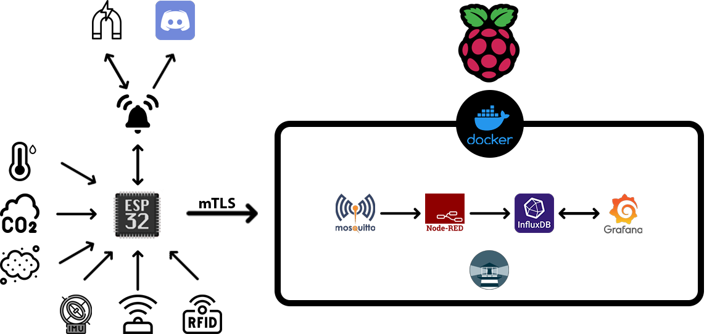
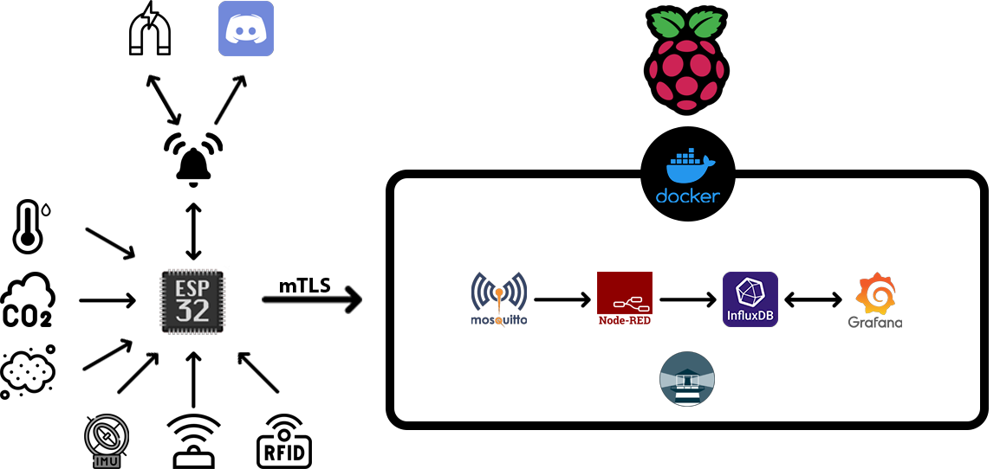

Introductie
Hallo! Ik ben Daniel Van Dessel, een ... jaar oude, gemotiveerde en hands-on student Graduaat Internet of Things aan de AP Hogeschool in Antwerpen, België (Sept 2023 - verwacht Dec 2025). Ik heb een sterke passie voor elektronica, embedded systems en het ontwikkelen van slimme, geconnecteerde oplossingen.
Tijdens mijn lopende studie verdiep ik me in technologieën zoals ESP32 (zowel met de Arduino omgeving als het ESP-IDF framework), Raspberry Pi, en smart building standaarden zoals Loxone en KNX. Mijn focus ligt op het realiseren van innovatieve en veilige IoT-projecten.
Ik ben leergierig, praktisch ingesteld en op zoek naar een stage of andere interessante opportuniteit waar ik mijn academische kennis kan toepassen in real-life projecten en verder kan groeien in het IoT-domein.
Vaardigheden & Kennis
Technische Skills
- HTML
- CSS
- JavaScript
- C++
- Python
- ESP32 (Arduino & ESP-IDF)
- Raspberry Pi
- Loxone / KNX
- Microsoft Azure
- MS Office (Word, Excel, PP)
Certificaten
VCA VOL – Veiligheid voor Operationeel Leidinggevenden
KNX Basistraining – Gecertificeerde kennis van de KNX-standaard
Talen
- Nederlands (C2 - Moedertaal)
- Engels (C1 - Vloeiend)
- Russisch (C1 - Vloeiend)
Projecten
Mijn voornaamste project is momenteel mijn eindwerk.

 

Eindproject: Veilige luchtkwaliteit meter
Dit Graduaatsproject transformeert een basis IoT-monitoringsysteem naar een robuust beveiligd platform. Het doel is niet alleen omgevingsdata (zoals luchtkwaliteit via CO2-sensoren) te meten, maar ook om robuuste fysieke beveiliging en manipulatiedetectie te integreren voor het apparaat zelf.
Belangrijke vernieuwingen omvatten de strategische keuze voor het ESP-IDF framework (i.p.v. de standaard Arduino core voor ESP32) vanwege de toegang tot geavanceerde security features zoals Secure Boot V2 en Flash Encryption. Dit beschermt de firmware en gevoelige data (zoals mTLS keys en RFID tags) tegen uitlezen en modificatie, zelfs bij fysieke toegang tot de hardware.
Communicatie gebeurt via MQTT over een directe end-to-end mTLS verbinding tussen de ESP32 en de Mosquitto broker, wat zorgt voor encryptie én wederzijdse authenticatie. Verder omvat het project fysieke toegangscontrole (RFID lezer, elektromagnetisch slot), geavanceerde tampering detectie (IMU, afstandssensor) en actieve alarmfuncties (lokale speaker, Discord webhook notificaties).
Extra's
Interesses & Ambities
Ik heb een grote en actieve interesse in de nieuwste ontwikkelingen binnen moderne elektronica en technologie, specifiek in het Internet of Things domein. Ik volg de trends op de voet en experimenteer graag met nieuwe hardware en software om mijn kennis uit te breiden.
Mijn ambitie is om mijn vaardigheden verder te ontwikkelen en toe te passen in een professionele omgeving. Ik ben momenteel actief op zoek naar een uitdagende stageplaats waar ik kan bijdragen aan innovatieve projecten en praktische ervaring kan opdoen.
Neem Contact Op
Interesse in een samenwerking, een stageplaats, of gewoon een vraag? Aarzel niet om contact op te nemen!